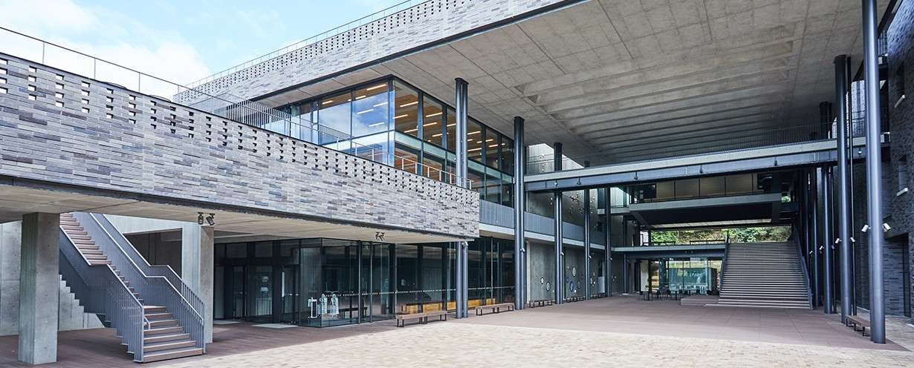

Asian Logic Conference 2025
Local Guide

! This page is under construction. !
This site provides a local guide to ALC 2025, which will be held at Kyoto Sangyo University (KSU) from Sep. 8th to Sep. 12th, 2025.
The conference will take place in:
- Tenchikan (天地館) [from Sep. 8 to 11] — the building shown in the photo above.
- Building #12 and Shinrikan (真理館) [on Sep. 12].
Please note that as mentioned above, the conference rooms will change on the last day. We apologize for any inconvenience.